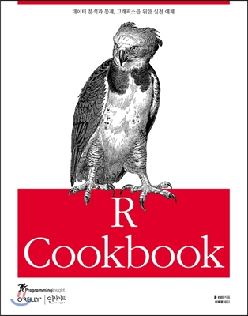
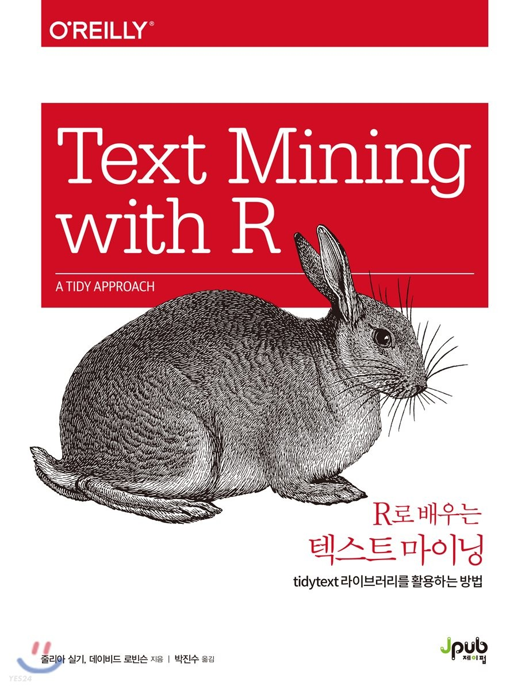
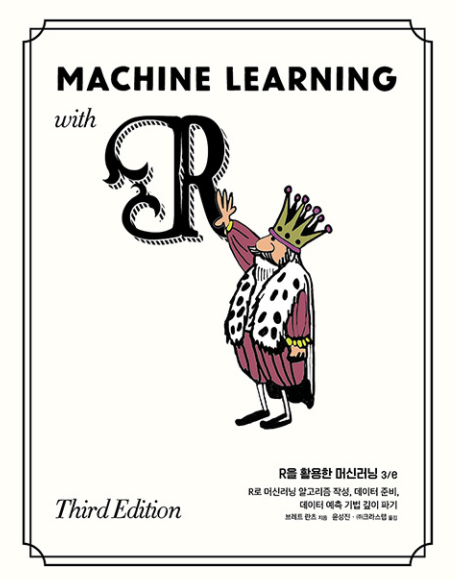

Notice
공지사항
Course Design
Pre-class
학생들은 오프라인(또는 온라인 스트리밍 Zoom 수업)에 참석하기 전에 강사가 제공하는 녹화된 강의를 시청합니다.
학생들은 자료를 독립적으로 공부함으로써 학습에 적극적인 역할을 하도록 권장됩니다.
사전 학습 내용은 R과 머신러닝의 기본 이론과 개념을 다룹니다.
In-class
수업 중에 강사는 수업 전 강의를 요약하고 다루는 개념에 대한 추가 설명을 제공합니다.
학생들의 이해를 강화하기 위해 학생들은 실습에 참여합니다. 이를 통해 배운 지식을 적용하고 코딩 기술을 개발할 수 있는 기회를 얻을 수 있습니다.
The official in-class time is PM 14:00 ~ 16:00
Textbooks




아래 페이지 방문하시면 R 기초와 기초 통계에 대한 정리가 너무 잘 되어 있는 사이트가 있습니다. 제 콘텐츠와 병행해서 보시면 많은 도움이 될 것 같아 공유합니다.
https://kilhwan.github.io/rprogramming/
Grading
| Items | Ratio (%) |
|---|---|
| Attendance | 0 |
| Paper proposal | 100 |
| Total | 100 |
- 출석 점수 없지만 출석이 1/3 미만: F
Communication
Notices & Questions
Please join Kakao open-chat room
Personal counsel (Scholarship, recommendation letter, etc.)
CJ-counselling room (Anything but the class content)
pw:
hanyang
Install gadgets
Install R, R Studio, & Rtools
R
R Studio
Rtools (only for window user)
To install R packages containing C/C++ language for window users (no need for Linux and Mac users)
Things you need to know
Don’t use OneDrive.
Use Github instead
Many people get an error when installing becausedf OneDrive
Set Windows user name to English
- If Korean characters are mixed in the installation path, there is a high probability of error occurrence
Installation Order
Step 1 ‑ Download the file
- Download R, Rtools, Rstudio installation files
Step 2 - Install R
Unified installation path: All will be installed in the
C:/RfolderRun in administrator mode when running the R installation file
After installing R, grant write permission to the R folder, Right-click and turn off read only
Step 3 ‑ Install Rtools
Administrator mode execution installation and folder setting as C:\R\rtools40
Create environment variable RTOOLS40_HOME after installation: Value - C:\R\rtools40\
Add %RTOOLS40_HOME%\usr\bin\ to the Path variable.
Step 4 - Install Rstudio
Right-click and run as administrator - installation path C:\R\Rstudio
Check rtools connection with Sys.which(“make”) command after installation